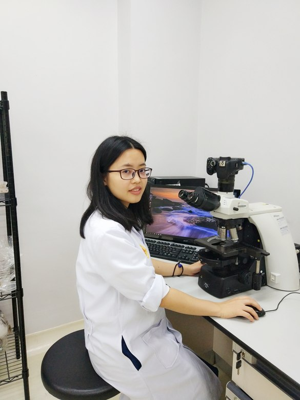

What changes in the life beneath our feet as we move from fallen leaves into the soil?
During my PhD at the University of Göttingen, I studied the communities that live in leaf litter, around roots, and in topsoil. These habitats sit close together, yet the organisms they support can respond differently to the same changes above ground. I combined molecular lab work, environmental sequencing, and ecological data analysis to find out how land-use change and restoration reshape those communities. That matters because the layer we choose to sample can change what we conclude about biodiversity loss or recovery.
I’m looking for research roles in microbial ecology and environmental bioinformatics.
What I do
I can take an environmental sample from the field to the lab, then analyze the sequencing data to answer an ecological question.

Molecular biology
I work with environmental samples in the lab, from DNA extraction and PCR to amplicon sequencing workflows. I also isolate and culture fungi from environmental samples and use microscopy to characterize them.
Ecology
I compare biodiversity and community composition across habitats, using ecological statistics to understand how organisms respond to land-use change and restoration.
Bioinformatics
I analyze amplicon and metagenomic sequencing data to characterize microbial communities. In R, I quantify biodiversity, compare community composition across habitats and treatments, and visualize the results so the ecological patterns are clear.
I examined how tropical land-use intensification restructures soil protist communities across litter, rhizosphere, and topsoil. The study looked at how responses varied by microhabitat.
Using datasets from Germany, Russia, Vietnam, and Indonesia, I compared communities of bacteria, fungi, protists, and nematodes living in leaf litter and soil. I measured how different the litter and soil communities were within each forest, then tested whether that difference was greater in temperate or tropical forests.
In Indonesian oil palm landscapes, I examined how soil protist communities varied across vertical habitats and along an ecological restoration gradient. I compared the relative importance of the vertical habitat gradient and the restoration gradient in shaping community responses. Tree islands provided a setting to investigate how planting trees within an oil palm plantation can shape belowground biodiversity.